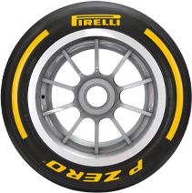
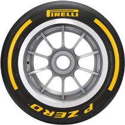

The new 18-inch tires were designed from the ground-up, with every element of the tire drawn from a clean sheet of paper: from the profile, to the structure, to the compounds. The design process took in more than 10,000 hours of indoor testing, more than 5000 hours of simulation, and more than 70 prototypes developed virtually, to eventually create 30 different specifications that were tested by nearly all the teams over more than 20,000 kilometres. The role of the drivers was crucial, with each of them contributing to the development at various points and helping Pirelli arrive at the definitive specifications thanks to their feedback.
The new tyres have a wider working range than their 13-inch predecessors, without compromising warm-up. As a result, overheating is limited and degradation is reduced. There are additionally new temperatures for the tyre blankets. All the tyres will now be heated up to 70 degrees, rather than 100 degrees at the front and 80 degrees at the rear, as was the case previously. The reduction of tyre blanket temperatures is part of a plan to gradually eliminate tyre blankets over the coming seasons, to help reduce electricity consumption and aid sustainability.
The new 18-inch tyres are also more similar to the tyres used every day by ordinary motorists, which helps Pirelli to transfer Formula 1 technology onto the road car product.
This is the hardest tire in the range, which will be nominated for the circuits that take the most energy out of the tires. These could typically include places like Silverstone or Suzuka. It's designed to provide maximum resistance to heat and extreme forces, being capable of running very long stints with minimal drop-off in terms of performance.
The second-hardest compound is more versatile than the C1, but it sits at the harder end of the range, which makes it more suitable to the faster, hotter and abrasive circuits. The harder compounds are also sometimes nominated for new circuits, in order to provide a conservative selection when the circumstances are still relatively unknown.
With three compounds nominated for each race, this one will be used at every event and as such it has to be extremely versatile - as it will sometimes be used as the hardest compound, sometimes as the middle compound, and sometimes as the softest compound. With an excellent balance between performance and versatility, this is well- suited to a wide range of circumstances.
It's designed to work well on the tight and twisty circuits, where quite a quick warm up is required in order to hit peak performance immediately. This is another tire that is used extensively throughout the season, making it adaptable to a number of different tracks.
These are the very softest tires in the redeveloped range, designed for the slowest circuits with low wear and degradation where maximum mechanical grip is required from the rubber. These are normally seen at street circuits, most typically in Monaco, and also on circuits where the asphalt is exceptionally smooth.